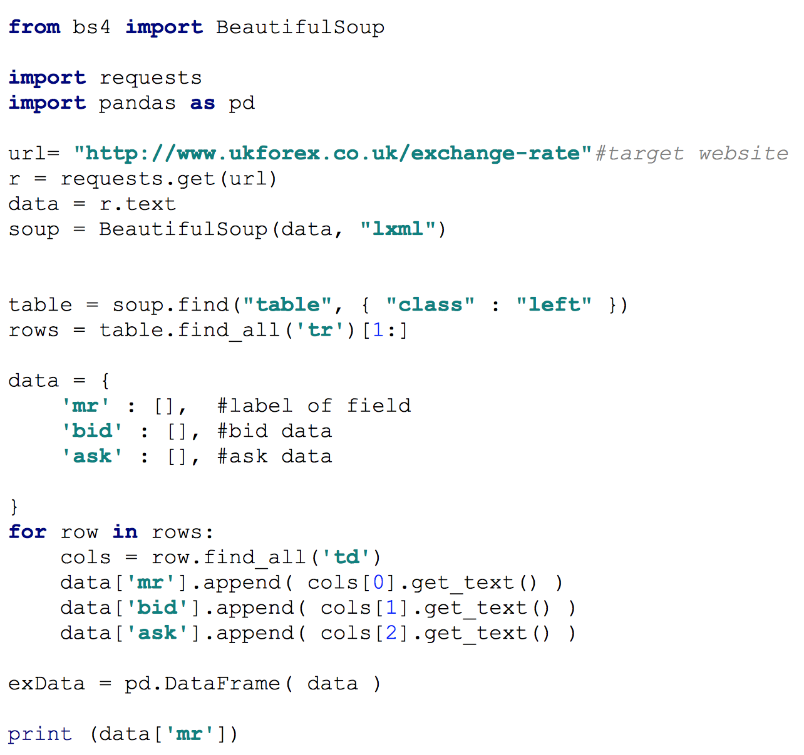
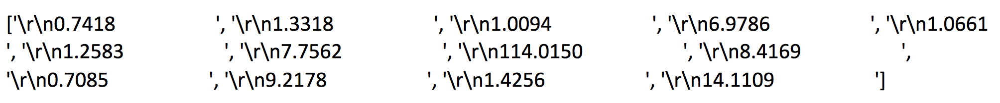
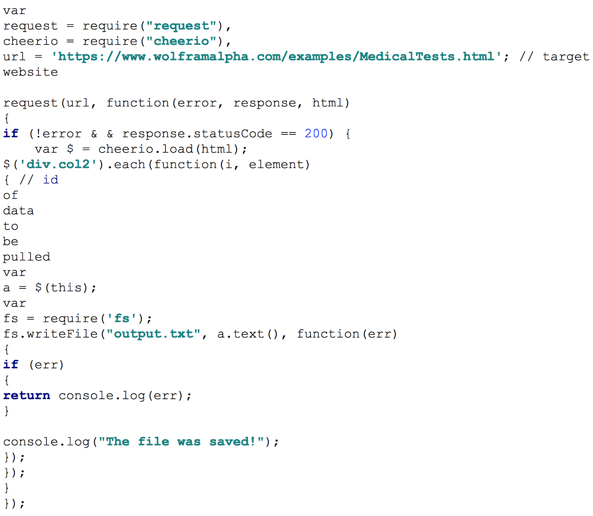

Architecture Research and Design: Form Renderer
Overall solution
The first part of this experiment investigated the feasibility of pulling data from html documents, and become familiar with the architecture of the project. I chose to conduct this part of the experiment in python as it was the language I was most familiar with. Following a tutorials from altitudelabs.com and Stanford, using the BeautifulSoup package, I was able to pull some arbitrary tabulated numeric data from the forex website and output it to the command line.

Console Output:

Following this part of the experiment, our team became involved in discussions with other teams regarding development technologies. It soon became apparent that Electrode.io was favoured. Although electrode does support python module plugins, it natively supports Node.js and thus I began to investigate how I would go about web scraping using Node.js. Upon some brief research, I found the most popular method involved using the Request (http request client) and Cheerio (lean JQuery specifically for server) packages. I managed to extract some textual data from: wolframalpha.com/examples/MedicalTests.html. I then exported this data to a text file to investigate how to output data from node applications.

Output in txt file:
Performance summary
The experiment was successful in the respect that I discovered methods to extract data from HTML files using both Python and Node.js. I also learned how to export data from a Node.js program. However I feel the experiment was limited in the regard that the data I pulled was completely arbitrary. The experiment would have been more complete had I had access to data representative to what would be available on available on the Peach forms. It was also limited as I had little idea of how the Form templates are to look, as the team currently working on that have not finalised designs, so pulling data from the actual templates may prove trickier depending as to how the markup files are laid out.